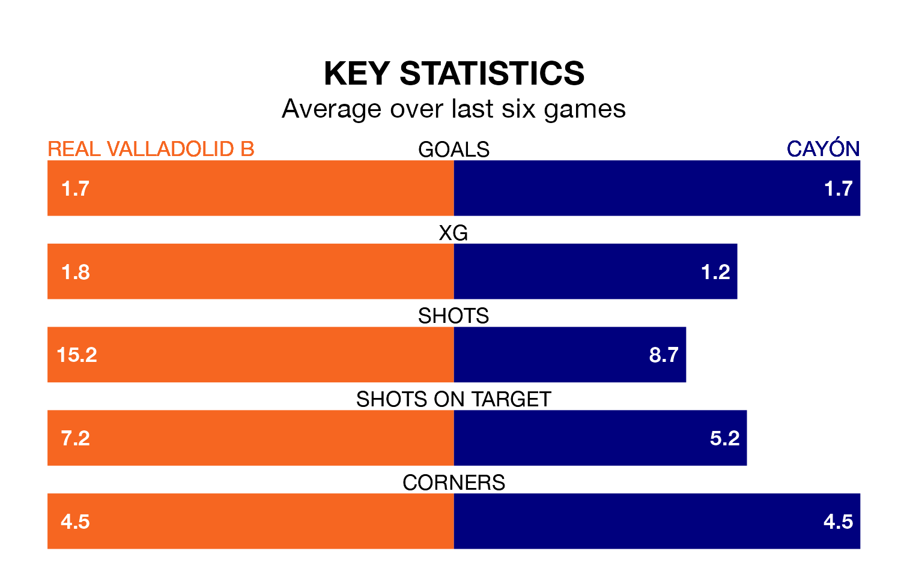

Real Valladolid B are heavy favourites to keep all three points at home in Sunday's early kick-off against Cayón.
Valladolid B, who sit 10th in the Segunda División RFEF Group 1 with 32 games played, are priced at 1.3 to seal victory at Campo 1 Anexos del José Zorrilla.
Sitting six places and 11 points behind them in the table, Cayón are 7.2 to win with *Betting Company*, while the draw is at 4.5.
With 40 goals in 32 games so far this season, Valladolid B are scoring at the league's average rate with 1.2 goals per game. And they are conceding more than average, letting in 50 goals at a rate of 1.6 per game.
Cayón, meanwhile, are below average scorers, with 1.1 goals per game. They have conceded 1.4 goals per game.
The hosts are in mixed form in the Segunda División RFEF Group 1, with two wins and two draws from their last six games.
With two wins and a draw over that period, the away side's form is slightly worse – they have taken seven points from 18, compared to Valladolid B's eight.
Valladolid B's last match was on Sunday, a 2-0 win against Langreo, with Adrián Rodríguez Sojo getting the goals for Valladolid B.
Cayón lost 2-1 against Gimnástica Torrelavega last time out, also on April 21, with Fernando Resines Gil on the scoresheet.
Updated: 07:59 (UTC), 26/04/24